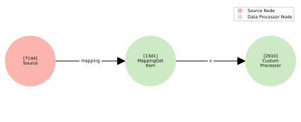

Custom Data Processors¶
One of the foundational components of this framework is the Data Processor node. These nodes are responsible for transforming individual examples of data, making them essential for feature engineering and enrichment tasks.
In this tutorial, we’ll guide you through the process of implementing a custom data processor that can be integrated seamlessly into a DataFlow. By the end, you will understand how to:
Define your own processor class.
Integrate your custom processor into a data flow graph.
Execute a complete workflow to see your processor in action.
[1]:
%config InlineBackend.figure_format = 'svg'
Imports¶
Before diving into implementing a custom data processor, let’s start by importing the necessary components:
[2]:
import datasets
from hyped import DataFlow, plot_data_flow
from hyped.core import BaseDataProcessor, BaseDataProcessorConfig, RunContext, ValidationSession, process_mode
from hyped.typing import Int, Float, Mapping, FeatureValidator, FeatureResolver, ExcludeFieldIf, Annotated
Creating a Data Flow¶
Next, we’ll create a simple dataset and a data flow instance from it:
[3]:
ds = datasets.Dataset.from_dict({"x": [0, 1, 2, 3, 4]})
flow = DataFlow(ds.features)
Implementing a Custom Data Processor¶
In this section, we’ll demonstrate how to create a custom data processor by building on the core components of hyped. A custom data processor consists of two primary parts:
A configuration class that defines the processor’s parameters.
The processor class itself, which implements the transformation logic.
Let’s start with a simple example.
Step 1: Define the Processor Configuration¶
The configuration class specifies the parameters your custom processor will use. It inherits from BaseDataProcessorConfig and allows you to define any settings or hyperparameters required for your transformation.
[4]:
class CustomProcessorConfig(BaseDataProcessorConfig):
val: int
In this example, val is an integer parameter that controls the behavior of the processor. You can add more fields to this class as needed to support additional configuration options.
Step 2: Implement the Processor Logic¶
The processor class contains the actual transformation logic. It inherits from BaseDataProcessor, which provides a structured interface for defining custom processors. Specifically, you need to implement the process method, which takes in a RunContext object and the input data to be processed. In this case, it’s an integer (Int), as specified by the type hint.
[5]:
class CustomProcessor(BaseDataProcessor[CustomProcessorConfig]):
def process(self, ctx: RunContext, x: Int) -> Int:
return x * self.config.val
Importance of Type Annotations
One of the key features of the hyped is its ability to validate input and infer output types from the type annotations. Make sure to always use the types provided by hyped.typing to annotate the process function.
During the construction of the data flow, these type annotations are used to infer and propagate feature types across the pipeline. This ensures that the data flow is consistent and that downstream processors receive the correct types.
Using the Custom Data Processor¶
Now that we’ve implemented a custom data processor, let’s see how to integrate it into a DataFlow pipeline. This section will walk you through the steps using the custom processor and executing the pipeline to transform your dataset.
To use the custom processor in your data flow, you instantiate it with its configuration parameters and call it on a feature from the flow’s source.
[6]:
out = CustomProcessor(val=4).call(x=flow.source["x"])
CustomProcessor(val=4): Creates an instance of the processor withval=4as its configuration parameter..call(x=flow.source["x"]): Specifies that the processor will operate on the feature"x"from the data flow’s source. The output is captured in the variableout.
Once you’ve defined your data flow, you can visualize its structure to verify that the custom processor is added to the underlying processing graph.
[7]:
plot_data_flow(flow);

To process a dataset using the data flow, call the apply method. This method applies the transformations defined in the data flow to the dataset and collects the specified outputs.
[8]:
out_ds = flow.apply(ds, collect={"out": out})
collect={"out": out} specifies that the output of the processor should be collected in the resulting dataset under the key "out".
[9]:
out_ds.to_dict()
[9]:
{'out': [0, 4, 8, 12, 16]}
Advanced Usage¶
The DataFlow framework provides advanced features that enable greater flexibility and efficiency in data processing. In this section, we’ll explore some of these features, starting with the process_mode decorator.
Returning Multiple Outputs¶
In some scenarios, a processor needs to generate multiple outputs instead of a single value. The framework supports this by allowing the processor to return a custom mapping type. Each field in the mapping represents a distinct output that can be used downstream in the data flow.
Here’s how you can define and use a processor that generates multiple outputs:
[10]:
class CustomOutput(Mapping):
fieldA: Int
fieldB: Int
class CustomProcessorConfigV2(BaseDataProcessorConfig):
val: int
class CustomProcessorV2(BaseDataProcessor[CustomProcessorConfigV2]):
def process(self, ctx: RunContext, x: Int) -> CustomOutput:
return {
"fieldA": x * self.config.val,
"fieldB": x * self.config.val ** 2
}
In this example, the processor returns a CustomOutput type, which is a mpping where each key-value pair corresponds to a specific output field. The process method generates a dictionary matching the structure defined by CustomOutput.
Once the processor is defined, it can be seamlessly integrated into the data flow, and its outputs can be collected as part of the dataset:
[11]:
# Define the output of the processor
out = CustomProcessorV2(val=2).call(x=flow.source["x"])
# Apply the data flow to the dataset, collecting the outputs
out_ds = flow.apply(ds, collect=out)
# Convert the resulting dataset to a dictionary for inspection
out_ds.to_dict()
[11]:
{'fieldA': [0, 2, 4, 6, 8], 'fieldB': [0, 4, 8, 12, 16]}
Note how in this case we can pass the output directly as the collect feature. The collect feature requires a mapping data type which is satisfied by the output of the processor.
Conditional Output Fields¶
In some scenarios, the fields included in the processor’s output need to be determined dynamically based on configuration values. The framework allows you to define conditional outputs by combining a custom mapping type with dynamic field exclusions.
Here’s how you can define a processor that conditionally includes or excludes certain fields in its output:
[12]:
class CustomProcessorConfigV3(BaseDataProcessorConfig):
val: int
returns_fieldB: bool
class CustomOutput(Mapping):
fieldA: Int
fieldB: Annotated[Int, ExcludeFieldIf(lambda c, i, _: not c.returns_fieldB)]
class CustomProcessorV3(BaseDataProcessor[CustomProcessorConfigV3]):
def process(self, ctx: RunContext, x: Int) -> CustomOutput:
if self.config.returns_fieldB:
# return both fieldA and fieldB
return {
"fieldA": x * self.config.val,
"fieldB": x * self.config.val ** 2
}
else:
# return only fieldA
return {"fieldA": x * self.config.val}
Here, CustomOutput is a mapping that conditionally includes fieldB. The ExcludeFieldIf decorator ensures that fieldB is excluded if the condition not c.returns_fieldB evaluates to True. The process method dynamically adjusts the returned mapping based on the returns_fieldB flag in the configuration.
You can easily integrate the processor into a data flow and collect its outputs dynamically:
[13]:
# Define the output of the processor
out_without_fieldB = CustomProcessorV3(val=2, returns_fieldB=False).call(x=flow.source["x"])
out_with_fieldB = CustomProcessorV3(val=2, returns_fieldB=True).call(x=flow.source["x"])
# Apply the data flow to the dataset, collecting the outputs
out_ds = flow.apply(
ds,
collect={
"outA": out_without_fieldB,
"outB": out_with_fieldB,
}
)
# Convert the resulting dataset to a dictionary for inspection
print("returns_fieldB=False:", out_ds.to_dict()["outA"])
print("returns_fieldB=True: ", out_ds.to_dict()["outB"])
returns_fieldB=False: [{'fieldA': 0}, {'fieldA': 2}, {'fieldA': 4}, {'fieldA': 6}, {'fieldA': 8}]
returns_fieldB=True: [{'fieldA': 0, 'fieldB': 0}, {'fieldA': 2, 'fieldB': 4}, {'fieldA': 4, 'fieldB': 8}, {'fieldA': 6, 'fieldB': 12}, {'fieldA': 8, 'fieldB': 16}]
Note how the output dataset only includes fieldA in the first case where the processor was initialized with returns_fieldB=False, while it includes both fields in the other case.
Using the process_mode Decorator¶
By default, the process method in a custom processor operates on individual examples. However, there are cases where processing multiple examples at once (in batches) can significantly improve performance, especially when working with large datasets or computationally intensive transformations.
The process_mode decorator allows you to specify whether the process method operates in a batched or single-example mode.
Here’s how to define a processor that operates in batched mode:
[14]:
class CustomProcessorConfigV4(BaseDataProcessorConfig):
val: int
class CustomProcessorV4(BaseDataProcessor[CustomProcessorConfigV4]):
@process_mode(batched=True)
def process(self, ctx: RunContext, x: Int) -> Int:
return [v * self.config.val for v in x]
The process_mode(batched=True) decorator indicates that the process method will receive a batch of inputs (e.g., a list of integers) instead of a single example. The method must return a batch of outputs of the same length as the input batch.
Note that the new batched CustomProcessorV2 achieves the same result as the basic implementation in CustomProcessor but processes inputs in batches:
[15]:
# Use the batched CustomProcessorV2
out = CustomProcessorV4(val=4).call(x=flow.source["x"])
# Apply the data flow to the dataset
out_ds = flow.apply(ds, collect={"out": out})
print(out_ds.to_dict())
{'out': [0, 4, 8, 12, 16]}
Using Type Variables¶
In more advanced use cases, you may want to define processors that are type-agnostic or can work with different types of data. The TypeVar from Python’s typing module allows you to define such flexible processor signatures by introducing type parameters. This allows your processors to handle multiple data types while ensuring type safety.
[16]:
from typing import TypeVar
class CustomProcessorConfigV5(BaseDataProcessorConfig):
...
T = TypeVar("T", Int, Float)
class CustomProcessorV5(BaseDataProcessor[CustomProcessorConfigV5]):
def process(self, ctx: RunContext, x: T, y: T) -> T:
return x + y
When using TypeVar in a processor’s signature, the output type is dynamically inferred from the input arguments. However, it’s important to understand that TypeVar doesn’t enforce exact matching between the input types; instead, it allows types that are castable to each other.
This behavior makes the processor more flexible, as it can work with different but compatible types, such as an Int and a Float, and automatically adjust the result to a compatible output type.
[17]:
from hyped.typing import cast
int_feature = flow.source["x"]
float_feature = cast(Float, flow.source["x"])
int_out = CustomProcessorV5().call(x=int_feature, y=int_feature)
float_out = CustomProcessorV5().call(x=float_feature, y=float_feature)
mixed_out = CustomProcessorV5().call(x=int_feature, y=float_feature)
print("x: Int, y: Int -> ", int_out.dtype)
print("x: Float, y: Float ->", float_out.dtype)
print("x: Int, y: Float -> ", mixed_out.dtype)
---------------------------------------------------------------------------
ImportError Traceback (most recent call last)
Cell In[17], line 1
----> 1 from hyped.typing import cast
3 int_feature = flow.source["x"]
4 float_feature = cast(Float, flow.source["x"])
ImportError: cannot import name 'cast' from 'hyped.typing' (/Users/ndoll/dev/open-hyped/hyped/src/hyped/typing.py)
Custom Feature Validation¶
The FeatureValidator allows you to implement custom feature validation based on processor configuration. This is particularly useful when your processor needs to enforce specific constraints on the input features, depending on how it has been configured.
[17]:
class CustomProcessorConfigV6(BaseDataProcessorConfig):
expects_float: bool
def custom_feature_validation(
feature: Int | Float,
config: CustomProcessorConfigV6,
session: ValidationSession
) -> Int | Float:
if isinstance(feature, Int) and config.expects_float:
raise TypeError("Expected Float")
return feature
class CustomProcessorV6(BaseDataProcessor[CustomProcessorConfigV6]):
def process(
self,
ctx: RunContext,
x: Annotated[Int | Float, FeatureValidator(custom_feature_validation)]
) -> Int:
return int(x)
In this example, we combine configuration-specific logic with feature validation to ensure that the inputs to our processor match the expected types. Let’s break down the key components:
Configuration-Specific Logic: The
CustomProcessorConfigV3class has a configuration parameterexpects_float, which controls whether the processor expects its input to be aFloat. This configuration is passed to the processor and determines the validation rules for the features.Feature Validation: The
custom_feature_validationfunction is a custom validator that checks the type of the input feature. If the feature is anIntbut the configuration expects aFloat, the function raises aTypeError. This ensures that the input meets the necessary criteria before the processor does any further work.Using the ``FeatureValidator``: In the
processmethod of theprocessor, we annotate the input featurexwithFeatureValidator(custom_feature_validation). This tells the framework to apply thecustom_feature_validationfunction toxbefore it proceeds with processing. The validator checks whether the feature matches the expected type based on the configuration.
[18]:
# expects float but receives int
out = CustomProcessorV6(expects_float=True).call(x=flow.source["x"])
---------------------------------------------------------------------------
TypeError Traceback (most recent call last)
Cell In[18], line 2
1 # expects float but receives int
----> 2 out = CustomProcessorV6(expects_float=True).call(x=flow.source["x"])
File ~/dev/open-hyped/hyped/src/hyped/core/nodes/base.py:505, in BaseNode.call(self, *args, **kwargs)
502 with FeatureEngine(name, self.config, self.signature) as engine:
503 # validate the node signature and input arguments
504 engine.validate_signature()
--> 505 engine.validate_arguments(*args, **kwargs)
506 # split the input features from the input constants
507 references, objects, object_dtypes = engine.get_references_and_objects(*args, **kwargs)
File ~/dev/open-hyped/hyped/src/hyped/core/features/engine.py:278, in FeatureEngine.validate_arguments(self, *args, **kwargs)
275 try:
276 # validate input arguments
277 context = {"config": self.config, "session": self.session}
--> 278 self.validator.model_validate(bound_args.arguments, context=context, strict=True)
280 except pydantic.ValidationError as e:
281 # TODO: improve error message to include error keys and expected type
282 raise TypeError(
283 f"Invalid argument types provided in the call to '{self.name}'. "
284 ) from e
[... skipping hidden 1 frame]
File ~/dev/open-hyped/hyped/src/hyped/core/features/validators.py:118, in FeatureValidator.__init__.<locals>.wrapped_validator(val, info)
108 if (
109 (info.context is None)
110 or ("config" not in info.context)
111 or ("session" not in info.context)
112 ):
113 raise RuntimeError(
114 "FeatureValidator requires 'config' and 'session' to be present "
115 "in the validation context. Ensure that these are provided."
116 )
--> 118 return validator(val, info.context["config"], info.context["session"])
Cell In[17], line 10, in custom_feature_validation(feature, config, session)
4 def custom_feature_validation(
5 feature: Int | Float,
6 config: CustomProcessorConfigV6,
7 session: ValidationSession
8 ) -> Int | Float:
9 if isinstance(feature, Int) and config.expects_float:
---> 10 raise TypeError("Expected Float")
11 return feature
TypeError: Expected Float
Feature Validation Session¶
In more complex scenarios, you may need to perform validation that goes beyond simple type checking. The FeatureValidator provides a powerful mechanism for dynamic validation, allowing you to store and manage additional context across multiple validation functions within the same session.
What makes the FeatureValidator system particularly powerful is that the session is not limited to validating a single feature. Instead, it can be used to manage the validation context across various features, even across multiple validation functions. Information stored in the context can then be accessed and referenced throughout the entire validation process, allowing for more sophisticated validation logic that depends on the accumulated context.
The lifetime of the validation session is tied to the validation of the function signature. Specifically, the session remains active from the moment the input arguments are validated until the output features are constructed. This means the session spans the entire duration of the validation process, ensuring that the context persists across the validation of both inputs and outputs.
The following example makes use of the validation session to ensure that two input features are of the exact same data type.
[18]:
class CustomProcessorConfigV7(BaseDataProcessorConfig):
outputs_float: bool
def match_feature_validator(
feature: Int | Float,
config: CustomProcessorConfigV7,
session: ValidationSession
):
# capture data type of the feature in the validation session
if session.get_context("feature_dtype") is None:
session.set_context("feature_dtype", feature.dtype)
# compare the dtype of the feature with the captured dtype
if feature.dtype != session.get_context("feature_dtype"):
raise TypeError("DType Mismatch")
class CustomProcessorV7(BaseDataProcessor[CustomProcessorConfigV7]):
def process(
self,
ctx: RunContext,
x: Annotated[Int | Float, FeatureValidator(match_feature_validator)],
y: Annotated[Int | Float, FeatureValidator(match_feature_validator)]
) -> Int:
return int(x + y)
In this example, we make use of the validation session to store the data type of the input feature as context information.
Validation Context: In the
match_feature_validatorfunction, the data type (dtype) of the feature is stored in the session usingsession.set_context. This allows us to track the data type of the feature across multiple validation calls and enforce consistency. If the data type of the next feature doesn’t match the first one, we raise aTypeError.Multiple Inputs: The process method in
CustomProcessorV4takes two inputs,xandy, both of which are validated using thematch_feature_validator. Both features are compared to ensure they share the same data type, ensuring the processor operates on consistent inputs.
Custom Feature Resolver¶
The FeatureResolver is a powerful tool that allows you to implement custom logic for determining the output feature type of a processor. This can be particularly useful when you need to dynamically infer the type of the output based on certain conditions, such as the configuration or the types of input features.
By using the feature resolver, you can define custom logic that adapts the data processing pipeline to different requirements, making it more flexible and dynamic.
[19]:
class CustomProcessorConfigV8(BaseDataProcessorConfig):
outputs_float: bool
def custom_feature_resolver(
config: None | CustomProcessorConfigV8,
inputs: dict[str, Int | Float],
session: ValidationSession
) -> type[Int] | type[Float]:
return Float if config.outputs_float else Int
class CustomProcessorV8(BaseDataProcessor[CustomProcessorConfigV8]):
def process(
self,
ctx: RunContext,
x: Int,
) -> Annotated[Int | Float, FeatureResolver(custom_feature_resolver)]:
...
In this example, the custom_feature_resolver function is responsible for inferring the output feature type. It takes in the config, a dictionary of inputs, and a session as arguments. The process method in the CustomProcessorV5 class uses the FeatureResolver decorator to apply the custom_feature_resolver function to determine the output type of the processor.
We can check the behavior by calling the processor with different configurations:
[20]:
int_out = CustomProcessorV8(outputs_float=False).call(x=flow.source["x"])
float_out = CustomProcessorV8(outputs_float=True).call(x=flow.source["x"])
print("Output dtyle (outputs_float=False):", int_out.dtype)
print("Output dtyle (outputs_float=True): ", float_out.dtype)
Output dtyle (outputs_float=False): Int64
Output dtyle (outputs_float=True): Double